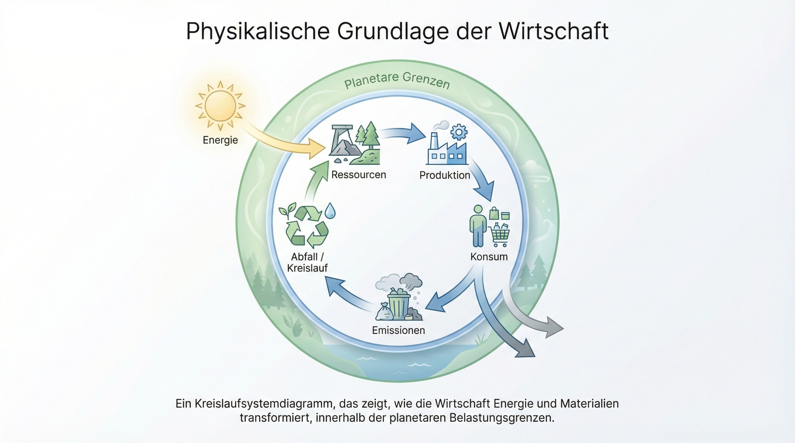
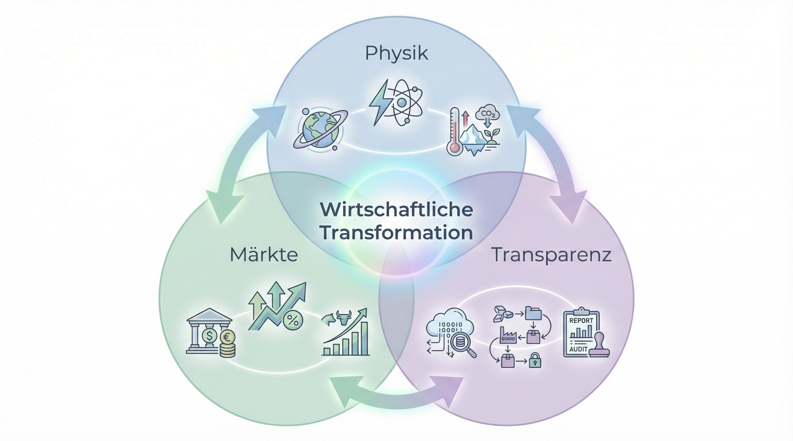
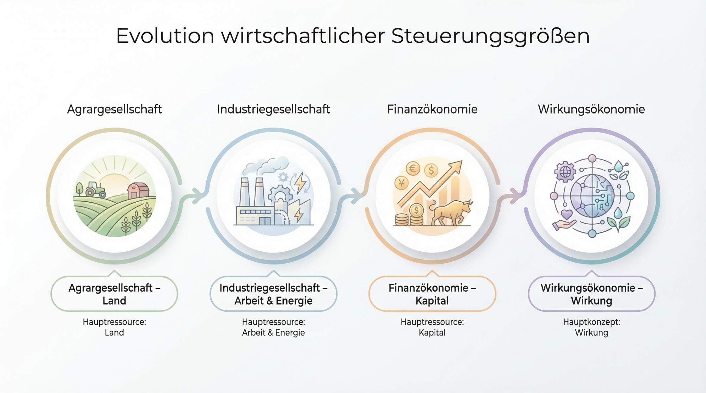
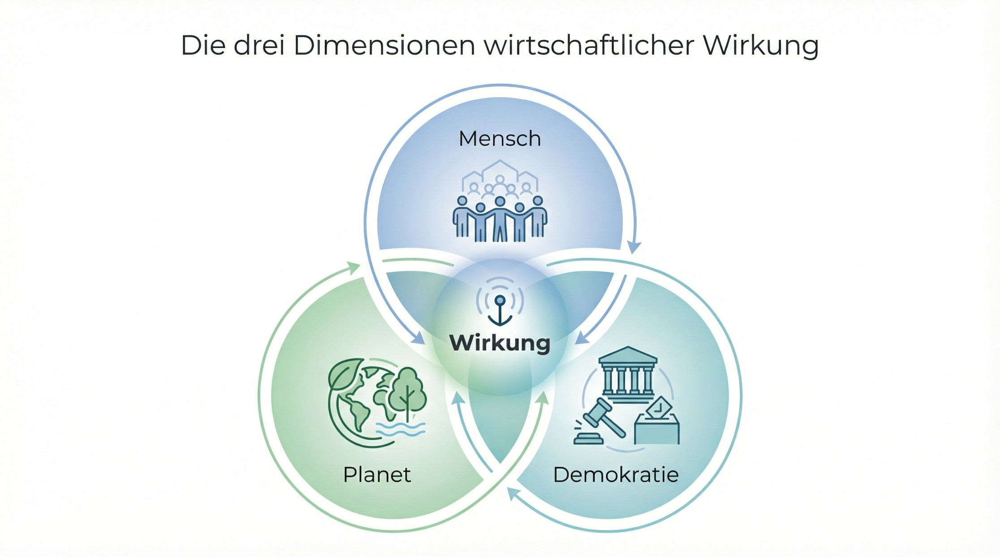
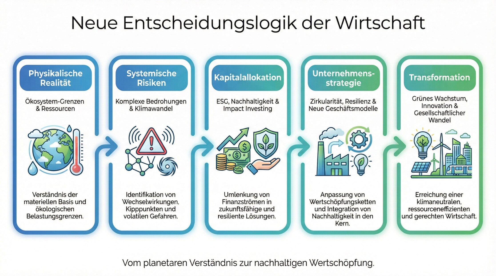
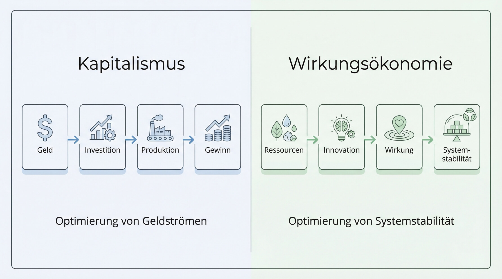

Einleitung - Die falsche Debatte über Nachhaltigkeit
Kaum ein wirtschaftspolitisches Thema wird derzeit so kontrovers diskutiert wie Nachhaltigkeit. Für die einen ist sie eine notwendige Antwort auf Klimawandel, Ressourcenknappheit und soziale Instabilität. Für die anderen steht sie symbolisch für Bürokratie, Regulierung und eine vermeintliche Überforderung von Wirtschaft und Gesellschaft. Begriffe wie ESG, Lieferkettengesetz oder CSRD sind längst Teil politischer Auseinandersetzungen geworden - und werden häufig als Ausdruck einer ideologisch motivierten Transformation der Wirtschaft dargestellt.
Doch diese Debatte verfehlt den eigentlichen Kern des Problems.
Sie suggeriert, dass wirtschaftliche Transformation primär eine politische Entscheidung sei: dass Regierungen Nachhaltigkeit vorschreiben, Unternehmen darauf reagieren und Märkte sich entsprechend anpassen. In diesem Bild erscheint Nachhaltigkeit als normatives Projekt - als moralische oder politische Zielsetzung, die durch Regulierung umgesetzt werden soll.
Die Realität ist jedoch deutlich komplexer.
Wirtschaftliche Risiken entstehen nicht primär durch Regulierung. Sie entstehen durch die physikalischen und systemischen Rahmenbedingungen, innerhalb derer wirtschaftliche Aktivität überhaupt möglich ist. Energiepreise werden nicht durch Ideologie bestimmt, sondern durch Verfügbarkeit von Ressourcen, Infrastruktur und Technologie. Lieferketten brechen nicht aufgrund politischer Programme zusammen, sondern aufgrund geopolitischer Konflikte, klimabedingter Extremereignisse oder struktureller Abhängigkeiten von einzelnen Rohstoffen und Produktionsstandorten. Versicherungen kalkulieren Risiken nicht nach politischer Überzeugung, sondern nach Schadenswahrscheinlichkeit und Schadenshöhe.
Mit anderen Worten: Die wirtschaftliche Realität wird letztlich von physikalischen, ökologischen und systemischen Faktoren bestimmt.
Diese Faktoren wirken auf Märkte, Preise, Investitionen und Geschäftsmodelle - unabhängig davon, ob politische Akteure sie regulieren oder nicht. Politik kann diese Entwicklungen beschleunigen oder bremsen, sie kann Transparenz schaffen oder Fehlanreize korrigieren. Doch sie erzeugt die zugrunde liegenden Risiken nicht.
Genau hier liegt ein grundlegendes Missverständnis der aktuellen Nachhaltigkeitsdebatte.
Solange Nachhaltigkeit primär als politisches oder moralisches Projekt verstanden wird, erscheint sie zwangsläufig als externe Einschränkung wirtschaftlicher Freiheit. Unternehmen sehen sich dann mit zusätzlichen Anforderungen konfrontiert, die scheinbar außerhalb der ökonomischen Logik stehen. Nachhaltigkeit wird zu einem Kostenfaktor, zu einem Reporting-Thema oder zu einer Reputationsfrage.
Tatsächlich handelt es sich jedoch um etwas ganz anderes.
Die Transformation, die wir derzeit beobachten, ist in erster Linie eine Anpassung wirtschaftlicher Systeme an neue Realitäten: an begrenzte Ressourcen, an zunehmende Systemrisiken, an globale Vernetzungen von Lieferketten, Kapitalströmen und Informationsräumen. Sie ist keine politische Erfindung, sondern eine Folge der Tatsache, dass wirtschaftliche Aktivität immer in ökologische, soziale und institutionelle Systeme eingebettet ist.
Genau an diesem Punkt beginnt eine neue Perspektive auf Wirtschaft und Nachhaltigkeit.
Die zentrale Frage lautet dann nicht mehr, wie Politik Unternehmen zu nachhaltigem Verhalten zwingen kann. Sie lautet vielmehr: Wie muss ein wirtschaftliches Steuerungssystem aussehen, wenn Risiken und Wirkungen komplexer, vernetzter und langfristiger werden als es die traditionellen Kennzahlen der Industrieökonomie abbilden können?
Denn das bestehende Wirtschaftssystem misst zwar äußerst präzise - es misst jedoch primär Kapital. Rendite, Umsatz, Marktwert und Wachstum sind die zentralen Größen, nach denen wirtschaftlicher Erfolg bewertet wird. Was diese Kennzahlen jedoch nur unzureichend erfassen, sind die systemischen Wirkungen wirtschaftlicher Aktivität: Auswirkungen auf ökologische Stabilität, gesellschaftlichen Zusammenhalt oder demokratische Institutionen. Genau diese Wirkungen bestimmen jedoch zunehmend die realen Risiken wirtschaftlicher Systeme. Nachhaltigkeit-Systemarchitektur
Damit entsteht eine strukturelle Spannung: Die Realität wirtschaftlicher Risiken wird immer stärker durch komplexe Systemwirkungen geprägt, während das dominante Steuerungssystem weiterhin primär Kapitalströme misst.
Aus dieser Spannung heraus entsteht eine Entwicklung, die sich zunehmend in Unternehmen, Finanzmärkten und politischen Institutionen beobachten lässt: der Versuch, wirtschaftliche Entscheidungen stärker an ihren tatsächlichen Wirkungen auszurichten.
Diese Entwicklung lässt sich als Übergang von einer kapitalszentrierten zu einer wirkungszentrierten Steuerungslogik beschreiben.
Die Wirkungsökonomie ist in diesem Sinne kein ideologisches Gegenmodell zum Kapitalismus. Sie ist vielmehr eine Weiterentwicklung wirtschaftlicher Steuerungslogik unter Bedingungen komplexer, vernetzter Systeme. Ihr Ausgangspunkt ist nicht eine moralische Forderung, sondern eine analytische Beobachtung: dass wirtschaftliche Stabilität im 21. Jahrhundert zunehmend davon abhängt, wie ökonomische Aktivitäten auf Mensch, Planet und demokratische Institutionen wirken.
Der folgende Beitrag entwickelt diese Perspektive Schritt für Schritt. Er zeigt, warum wirtschaftliche Transformation weniger durch Regulierung als durch physikalische Realitäten und Marktdynamiken getrieben wird, warum Nachhaltigkeit im bestehenden Steuerungsmodell strukturell unterbestimmt bleibt - und warum sich daraus langfristig eine neue Logik wirtschaftlicher Organisation ergibt: die Wirkungsökonomie.
Warum wirtschaftliche Risiken aus Physik entstehen
Wenn wir über wirtschaftliche Risiken sprechen, denken wir meist an Dinge wie Inflation, Zinssätze, Wettbewerb oder politische Entscheidungen. Diese Faktoren spielen zweifellos eine wichtige Rolle. Doch sie sind selten die eigentliche Ursache wirtschaftlicher Instabilität. In vielen Fällen sind sie lediglich Symptome tieferliegender systemischer Entwicklungen.
Die fundamentalen Rahmenbedingungen wirtschaftlicher Aktivität werden nicht in Parlamenten, Zentralbanken oder Vorstandsetagen festgelegt. Sie entstehen aus der physikalischen Realität unseres Planeten.

Rohstoffe müssen gefördert werden. Energie muss erzeugt werden. Wasser muss verfügbar sein. Infrastruktur muss Extremereignissen standhalten. Lieferketten müssen geographische, klimatische und politische Räume durchqueren. All diese Faktoren sind letztlich nicht politisch oder ideologisch bestimmt, sondern physikalisch.
Das gilt für die Geschichte der Wirtschaft ebenso wie für ihre Zukunft.
Die industrielle Revolution etwa war keine politische Idee, sondern das Ergebnis eines physikalischen Durchbruchs: der Nutzung fossiler Energiequellen in bisher ungekanntem Maßstab. Kohle, Öl und Gas ermöglichten eine enorme Steigerung der verfügbaren Energie pro Kopf - und damit eine Explosion von Produktivität, Mobilität und materiellen Wohlstand.
Doch dieselbe physikalische Grundlage erzeugt heute neue Risiken.
Die Konzentration von Treibhausgasen verändert das Klimasystem. Extremwetterereignisse nehmen zu. Wasserstress betrifft ganze Regionen. Infrastruktur wird anfälliger für klimatische Belastungen. Gleichzeitig werden viele Rohstoffe knapper oder geopolitisch stärker umkämpft.
Diese Entwicklungen sind keine politischen Narrative, sondern physikalische Prozesse mit ökonomischen Konsequenzen.
„Die Wirtschaft reagiert letztlich nicht auf Ideologien, sondern auf die Realität physikalischer Systeme.“ — Natalie Weber
Für Unternehmen manifestieren sich diese physikalischen Veränderungen in ganz konkreten wirtschaftlichen Risiken.
Energiepreise schwanken stärker, wenn Energieversorgungssysteme unter Druck geraten. Versicherungsprämien steigen, wenn Extremwetter häufiger Schäden verursacht. Lieferketten werden instabil, wenn klimatische Ereignisse oder geopolitische Konflikte zentrale Transportkorridore unterbrechen. Investoren ziehen Kapital aus Geschäftsmodellen ab, deren langfristige Stabilität zunehmend infrage steht.
In diesem Sinne entstehen wirtschaftliche Risiken häufig nicht zuerst im Markt, sondern im Zusammenspiel von Natur, Technologie und globalen Systemen.
Märkte reagieren lediglich darauf.
Sie übersetzen physikalische Veränderungen in Preise, Risikoprämien und Kapitalallokationen. Wenn ein Rohstoff knapper wird, steigt sein Preis. Wenn klimatische Risiken zunehmen, steigen Versicherungsprämien oder bestimmte Regionen werden überhaupt nicht mehr versicherbar. Wenn politische Konflikte Handelsrouten gefährden, verändern sich Lieferketten und Investitionsentscheidungen.
Die ökonomische Realität folgt damit letztlich einer einfachen Kette:
Physikalische Realität → ökonomische Risiken → unternehmerische Anpassung
Diese Dynamik lässt sich in zahlreichen aktuellen Entwicklungen beobachten.
Versicherungsunternehmen ziehen sich zunehmend aus besonders gefährdeten Regionen zurück, weil die Schäden durch Extremwetterereignisse nicht mehr kalkulierbar sind. Energieintensive Industrien passen ihre Investitionsstrategien an volatile Energiepreise an. Globale Konzerne reorganisieren ihre Lieferketten, um Abhängigkeiten von einzelnen Regionen zu reduzieren. Finanzmärkte bewerten Geschäftsmodelle zunehmend danach, wie resilient sie gegenüber langfristigen Umwelt- und Systemrisiken sind.
All diese Veränderungen sind keine unmittelbaren Folgen politischer Programme. Sie sind Reaktionen auf eine veränderte Risikostruktur der realen Welt.
Genau an dieser Stelle beginnt eine Entwicklung, die häufig missverstanden wird: die zunehmende Bedeutung von Nachhaltigkeitsdaten, Lieferketteninformationen und Wirkungsanalysen in wirtschaftlichen Entscheidungsprozessen.
Instrumente wie Nachhaltigkeitsberichte, ESG-Ratings oder die europäische Corporate Sustainability Reporting Directive (CSRD) werden häufig als regulatorische Belastung wahrgenommen. Tatsächlich erfüllen sie jedoch eine andere Funktion: Sie machen systemische Risiken sichtbar, die zuvor nur unzureichend in wirtschaftliche Entscheidungen integriert waren.
Sie schaffen Transparenz darüber, wie Unternehmen mit den realen Systembedingungen unserer Zeit umgehen.
Damit entsteht eine neue Ebene wirtschaftlicher Informationsinfrastruktur. Unternehmen beginnen nicht nur ihre finanziellen Kennzahlen zu analysieren, sondern auch ihre Abhängigkeiten von Energie, Wasser, Rohstoffen, Lieferketten oder gesellschaftlicher Stabilität.
Diese Transparenz verändert langfristig auch die Logik wirtschaftlicher Entscheidungen.
Investoren berücksichtigen zunehmend ökologische und soziale Risiken in ihren Portfolios. Versicherungen kalkulieren Klimarisiken in ihre Modelle ein. Unternehmen analysieren ihre Lieferketten nicht nur nach Kosten, sondern auch nach Resilienz und geopolitischen Abhängigkeiten.
Mit anderen Worten: Die Wirtschaft beginnt, Wirkungen systematischer zu beobachten.
Noch geschieht dies häufig fragmentiert und unvollständig. Doch die Richtung ist klar: In einer hochvernetzten Welt reichen klassische Kennzahlen wie Umsatz, Gewinn oder Marktanteil allein nicht mehr aus, um die Stabilität wirtschaftlicher Systeme zu bewerten.
Genau hier entsteht die nächste Phase wirtschaftlicher Entwicklung.
Denn sobald wirtschaftliche Akteure beginnen, ihre Entscheidungen stärker an systemischen Wirkungen auszurichten - an den Effekten auf ökologische Stabilität, gesellschaftliche Resilienz oder politische Institutionen - verändert sich zwangsläufig auch die Logik wirtschaftlicher Steuerung.
Die zentrale Frage lautet dann nicht mehr nur:
Wie profitabel ist ein Geschäftsmodell?
Sondern zunehmend auch:
Welche Wirkungen erzeugt es im Gesamtsystem?
Diese Verschiebung markiert den Beginn einer neuen ökonomischen Perspektive - einer Perspektive, in der wirtschaftlicher Erfolg nicht mehr ausschließlich über Kapitalflüsse definiert wird, sondern über die Wirkung wirtschaftlicher Aktivität auf die Stabilität des Systems, in dem sie stattfindet.
Genau an diesem Punkt beginnt die Idee der Wirkungsökonomie.
Warum Nachhaltigkeit im kapitalszentrierten System strukturell unterbestimmt bleibt
In den vergangenen zwei Jahrzehnten hat Nachhaltigkeit eine bemerkenswerte Entwicklung durchlaufen. Was lange Zeit als Randthema von Umweltbewegungen galt, ist heute in nahezu allen Bereichen wirtschaftlicher und politischer Entscheidungsprozesse präsent.
Unternehmen veröffentlichen umfangreiche Nachhaltigkeitsberichte. Investoren analysieren ESG-Ratings. Regierungen verabschieden Klimagesetze, Lieferkettenregeln und Transparenzpflichten. Internationale Organisationen haben mit den Sustainable Development Goals (SDGs) einen globalen Zielrahmen formuliert.
Nachhaltigkeit ist damit zu einem festen Bestandteil wirtschaftlicher und politischer Diskurse geworden.
Und dennoch bleibt ihre tatsächliche Wirkung erstaunlich begrenzt.
Globale Emissionen steigen weiter. Biodiversität nimmt weiter ab. Soziale Ungleichheit wächst in vielen Regionen der Welt. Demokratien geraten zunehmend unter Druck durch Polarisierung, Desinformation und wirtschaftliche Instabilität.
Dieses Paradox wirft eine grundlegende Frage auf:
Warum bleibt Nachhaltigkeit trotz wachsender Aufmerksamkeit und zunehmender Regulierung strukturell so wirkungsschwach?
Die verbreitete Antwort lautet meist: mangelnder politischer Wille, wirtschaftliche Interessen oder gesellschaftliche Trägheit. Diese Faktoren spielen zweifellos eine Rolle. Doch sie erklären nicht das strukturelle Problem.
Der eigentliche Grund liegt tiefer - in der Steuerungslogik unseres Wirtschaftssystems.
Das heutige System misst wirtschaftliche Aktivität äußerst präzise. Unternehmen verfügen über hochentwickelte Instrumente zur Analyse von Kostenstrukturen, Cashflows, Renditen und Marktwerten. Finanzmärkte reagieren in Sekundenbruchteilen auf neue Informationen. Volkswirtschaftliche Modelle berechnen Wachstum, Inflation und Produktivität.
Doch all diese Messsysteme haben eine gemeinsame Eigenschaft: Sie messen primär Kapital.
Umsatz, Gewinn, Rendite, Aktienkurs oder Marktwert sind die zentralen Größen wirtschaftlicher Bewertung. Selbst volkswirtschaftliche Kennzahlen wie das Bruttoinlandsprodukt aggregieren letztlich monetäre Transaktionen.
Kapital fungiert damit als universeller Aggregator wirtschaftlicher Aktivität.
Diese Logik war über lange Zeit außerordentlich erfolgreich. Kapital ermöglichte Investitionen, Innovationen und Skalierung. Es machte wirtschaftliche Aktivitäten vergleichbar, übertragbar und messbar. In der Industrieökonomie des 19. und 20. Jahrhunderts erwies sich diese Steuerungslogik als erstaunlich leistungsfähig.
Doch sie hat eine entscheidende Einschränkung.
Kapital misst Knappheit und Zahlungsfähigkeit - nicht Wirkung.
Ein Unternehmen kann hohe Gewinne erzielen, während es gleichzeitig ökologische Schäden verursacht, soziale Spannungen verstärkt oder demokratische Institutionen destabilisiert. Diese Wirkungen erscheinen in der klassischen ökonomischen Bilanz zunächst nicht oder nur indirekt.
„Das bestehende Wirtschaftssystem misst äußerst präzise - aber es misst vor allem Kapital. Die systemischen Wirkungen wirtschaftlicher Aktivität bleiben dabei weitgehend unsichtbar.“ — Natalie Weber
Genau hier entsteht die strukturelle Schwäche des heutigen Nachhaltigkeitsdiskurses.
Nachhaltigkeit wird in ein System integriert, dessen zentrale Bewertungsgröße weiterhin Kapital bleibt. Sie erscheint dadurch meist als additiver Faktor innerhalb einer unveränderten Steuerungslogik.
Unternehmen berücksichtigen Nachhaltigkeit dann,
wenn sie Kosten reduziert
wenn sie regulatorische Risiken vermeidet
wenn sie Reputation verbessert
wenn sie neue Märkte erschließt
Mit anderen Worten: Nachhaltigkeit wird relevant, sofern sie innerhalb der bestehenden Kapitallogik Vorteile erzeugt.
Doch sie wird nicht zum primären Maßstab wirtschaftlicher Entscheidungen.
Diese strukturelle Unterordnung führt zu einem grundlegenden Problem. Nachhaltigkeit wird zwar gemessen, berichtet und diskutiert - aber sie verändert die grundlegende Steuerungslogik wirtschaftlicher Systeme kaum.
Das bestehende Wirtschaftsmodell bleibt weiterhin auf die Optimierung von Kapitalströmen ausgerichtet.
Damit entsteht eine paradoxe Situation: Nachhaltigkeit ist sichtbar geworden, ohne systembestimmend zu werden.
Diese Situation lässt sich besonders deutlich an der Art und Weise beobachten, wie Nachhaltigkeitsziele häufig formuliert werden. Die 17 Sustainable Development Goals der Vereinten Nationen etwa umfassen eine Vielzahl ökologischer, sozialer und wirtschaftlicher Zielsetzungen.
Doch diese Ziele werden häufig wie eine Liste voneinander unabhängiger Variablen behandelt.
In Wirklichkeit handelt es sich jedoch um Zustandsgrößen eines hochgradig vernetzten Systems.
Eine Klimaschutzmaßnahme beeinflusst Energiepreise, soziale Verteilung, industrielle Wettbewerbsfähigkeit und politische Akzeptanz. Eine Veränderung globaler Lieferketten wirkt auf Beschäftigung, Migration, geopolitische Stabilität und Ressourcennutzung. Digitale Plattformregulierung beeinflusst Informationsqualität, demokratische Diskurse und wirtschaftliche Konzentration.
Komplexe Systeme funktionieren nicht additiv.
Sie bestehen aus Rückkopplungen, Wechselwirkungen und nichtlinearen Dynamiken. Veränderungen in einem Bereich können unerwartete Effekte in anderen Bereichen auslösen.
Solange Nachhaltigkeit jedoch innerhalb einer kapitalzentrierten Steuerungslogik behandelt wird, bleiben diese Wechselwirkungen weitgehend unsichtbar. Einzelindikatoren werden verbessert, ohne die Interdependenzstruktur des Systems explizit zu berücksichtigen.
Genau aus diesem Grund bleibt Nachhaltigkeit im bestehenden Modell strukturell unterbestimmt. Nachhaltigkeit-Systemarchitektur
Die zentrale Steuerungsgröße - Kapital - erfasst nicht die Stabilität der Systeme, von denen wirtschaftliche Aktivität langfristig abhängt.
Diese Erkenntnis führt zu einer grundlegenden Frage für die zukünftige Entwicklung wirtschaftlicher Systeme:
Was passiert, wenn wirtschaftliche Entscheidungen nicht mehr primär nach Kapital, sondern nach Wirkung bewertet werden?
Denn genau hier liegt der nächste mögliche Evolutionsschritt ökonomischer Organisation.
Wenn wirtschaftliche Aktivität zunehmend in komplexe ökologische, soziale und politische Systeme eingebettet ist, dann wird langfristig auch die Bewertung wirtschaftlicher Entscheidungen diese Wirkungen berücksichtigen müssen.
Nicht aus moralischen Gründen - sondern aus Gründen der Systemstabilität.
Genau an diesem Punkt beginnt sich eine neue Perspektive auf Wirtschaft herauszubilden: eine Perspektive, in der nicht mehr Kapital, sondern Wirkung zur zentralen Steuerungsgröße wird.
Diese Perspektive bildet die Grundlage der Wirkungsökonomie.
Die drei Treiber der Transformation: Physik, Märkte und Transparenz
Wenn Nachhaltigkeit im bestehenden Wirtschaftssystem strukturell unterbestimmt bleibt, stellt sich eine entscheidende Frage: Warum beobachten wir dennoch weltweit eine zunehmende Transformation wirtschaftlicher Strukturen?
Warum investieren Unternehmen massiv in erneuerbare Energien, Kreislaufwirtschaft oder resilientere Lieferketten? Warum analysieren Finanzmärkte zunehmend Klimarisiken, Ressourcenabhängigkeiten und geopolitische Instabilitäten? Warum entstehen neue regulatorische Rahmenwerke für Transparenz entlang globaler Wertschöpfungsketten?
Die Antwort liegt nicht in einem einzelnen politischen Programm oder einer bestimmten Ideologie.
Sie liegt in der Überlagerung dreier fundamentaler Entwicklungen, die gemeinsam eine neue wirtschaftliche Realität erzeugen:
Physik - Märkte - Transparenz
Diese drei Kräfte wirken zunehmend gleichzeitig auf wirtschaftliche Systeme und verändern ihre Steuerungslogik.

1. Physik: Die materiellen Grenzen wirtschaftlicher Systeme
Jede Wirtschaft basiert letztlich auf materiellen und energetischen Grundlagen.
Rohstoffe müssen gefördert werden. Energie muss erzeugt werden. Wasser muss verfügbar sein. Ökosysteme müssen stabil bleiben, damit Landwirtschaft, Infrastruktur und Siedlungen funktionieren.
Diese Grundlagen werden heute in einem Ausmaß unter Druck gesetzt, das lange Zeit unterschätzt wurde.
Der Klimawandel verändert Wetter- und Niederschlagsmuster. Extremereignisse wie Dürren, Überschwemmungen oder Hitzewellen nehmen zu. Wasserstress betrifft ganze Regionen. Viele strategische Rohstoffe werden geopolitisch zunehmend umkämpft.
Diese Entwicklungen sind keine politischen Narrative.
Sie sind physikalische Prozesse mit ökonomischen Folgen.
Wenn Energie teurer wird, verändert sich die Kostenstruktur ganzer Industrien. Wenn Extremwetter Infrastruktur beschädigt, steigen Versicherungsprämien oder ganze Regionen werden unversicherbar. Wenn Wasserknappheit industrielle Produktion einschränkt, müssen Unternehmen ihre Standorte oder Technologien anpassen.
Die physikalischen Rahmenbedingungen wirtschaftlicher Aktivität verschieben sich - und damit auch ihre Risikostruktur.
2. Märkte: Die Übersetzung physikalischer Risiken in Kapitalströme
Märkte fungieren als Übersetzungssystem für physikalische und systemische Risiken.
Sie transformieren reale Veränderungen in Preise, Risikoprämien und Investitionsentscheidungen.
Wenn Rohstoffe knapper werden, steigen ihre Preise. Wenn klimatische Risiken zunehmen, steigen Versicherungsprämien oder Kapitalanforderungen. Wenn geopolitische Konflikte Lieferketten gefährden, verändern sich Handelsstrukturen und Investitionsentscheidungen.
Besonders sichtbar wird diese Dynamik im Finanzsystem.
Investoren beginnen zunehmend, Geschäftsmodelle danach zu bewerten, wie resilient sie gegenüber langfristigen Umwelt- und Systemrisiken sind. Versicherungen kalkulieren Klimarisiken in ihre Modelle ein. Banken berücksichtigen Nachhaltigkeitsfaktoren zunehmend bei Kreditentscheidungen.
Diese Entwicklung ist keine moralische Bewegung innerhalb der Finanzmärkte.
Sie ist eine Reaktion auf veränderte Risikoprofile wirtschaftlicher Aktivität.
Kapital sucht Stabilität. Wenn bestimmte Geschäftsmodelle langfristig instabil erscheinen, verschiebt sich Kapital automatisch in resilientere Alternativen.
Damit entsteht ein Mechanismus, der wirtschaftliche Transformation auch ohne direkte politische Steuerung antreiben kann.
3. Transparenz: Die neue Informationsinfrastruktur der Wirtschaft
Der dritte Treiber der Transformation ist weniger sichtbar, aber ebenso entscheidend: Transparenz.
Über Jahrzehnte hinweg blieben viele systemische Risiken wirtschaftlicher Aktivität weitgehend unsichtbar. Unternehmen wussten häufig nur begrenzt, welche ökologischen oder sozialen Auswirkungen ihre globalen Lieferketten tatsächlich hatten. Investoren verfügten über wenig verlässliche Daten zu langfristigen Nachhaltigkeitsrisiken.
Diese Situation verändert sich derzeit grundlegend.
Neue regulatorische und technologische Entwicklungen schaffen eine bisher unbekannte Transparenz über die Wirkungen wirtschaftlicher Aktivitäten:
Nachhaltigkeitsberichte
ESG-Ratings
Lieferkettenanalysen
digitale Produktpässe
europäische Reportingstandards wie die CSRD
Diese Instrumente werden häufig als Bürokratie wahrgenommen. In Wirklichkeit bilden sie jedoch eine neue Informationsinfrastruktur für wirtschaftliche Entscheidungen.
Sie machen sichtbar,
welche Ressourcen Unternehmen tatsächlich nutzen
welche Emissionen entlang von Lieferketten entstehen
welche sozialen oder geopolitischen Risiken mit bestimmten Produktionsstrukturen verbunden sind
Transparenz verändert Märkte.
Sobald Informationen über Risiken und Wirkungen verfügbar sind, beginnen Investoren, Versicherungen und Unternehmen, diese Daten in ihre Entscheidungen einzubeziehen.
Damit entsteht ein neues Feedbacksystem innerhalb der Wirtschaft.
Die neue Dynamik wirtschaftlicher Systeme
Wenn diese drei Kräfte - Physik, Märkte und Transparenz - gleichzeitig wirken, entsteht eine neue Dynamik wirtschaftlicher Entwicklung.
Physikalische Veränderungen erzeugen neue Risiken. Märkte übersetzen diese Risiken in Preise und Kapitalbewegungen. Transparenz macht die zugrunde liegenden Wirkungen sichtbar.
Die wirtschaftliche Anpassung folgt dann einer relativ einfachen Logik:
Physikalische Realität → ökonomische Risiken → Kapitalallokation → Unternehmensstrategie
Unternehmen passen ihre Technologien an. Investoren verändern ihre Portfolios. Lieferketten werden neu organisiert. Neue Geschäftsmodelle entstehen.
Dieser Prozess ist nicht zentral geplant. Er entsteht aus der Interaktion vieler wirtschaftlicher Akteure.
Doch seine Richtung ist klar: Wirtschaftliche Entscheidungen beginnen sich zunehmend an systemischen Wirkungen zu orientieren.
Genau hier wird der nächste Schritt wirtschaftlicher Evolution sichtbar.
Denn sobald wirtschaftliche Akteure beginnen, ihre Entscheidungen systematisch nach Wirkungen zu bewerten - nach Auswirkungen auf Ressourcen, Gesellschaft oder institutionelle Stabilität - verändert sich langfristig auch die zentrale Steuerungsgröße wirtschaftlicher Systeme.
Die Wirtschaft beginnt nicht mehr nur Kapital zu optimieren.
Sie beginnt, Wirkung zu berücksichtigen.
Und genau an diesem Punkt entsteht eine neue ökonomische Perspektive: die Wirkungsökonomie.
Vom Kapital- zum Wirkungskompass
Über viele Jahrzehnte hinweg hat Kapital eine erstaunlich effektive Rolle als Steuerungsgröße wirtschaftlicher Systeme gespielt.
Kapital bündelt Informationen über Knappheit, Investitionen, Risiko und Erwartung. Es ermöglicht die Bewertung von Projekten, Unternehmen und Technologien. Märkte nutzen Preise und Renditen, um Ressourcen dorthin zu lenken, wo sie am produktivsten eingesetzt werden können.
Diese Logik war einer der zentralen Motoren wirtschaftlicher Entwicklung seit der industriellen Revolution.
Investitionen in Maschinen steigerten Produktivität. Technologische Innovationen senkten Kosten. Kapitalmärkte ermöglichten die Skalierung erfolgreicher Geschäftsmodelle.
In einer Welt relativ stabiler ökologischer und sozialer Rahmenbedingungen konnte Kapital daher über lange Zeit als funktionaler Kompass wirtschaftlicher Entscheidungen dienen.
Doch dieser Kompass hat eine strukturelle Grenze.
Kapital misst nicht die Stabilität der Systeme, von denen wirtschaftliche Aktivität langfristig abhängt.
Es misst Zahlungsfähigkeit, Marktpreise und Renditeerwartungen - aber nicht unmittelbar die Auswirkungen wirtschaftlicher Aktivitäten auf ökologische Kreisläufe, gesellschaftliche Stabilität oder demokratische Institutionen.
Solange diese Systeme relativ stabil blieben, fiel diese Einschränkung kaum ins Gewicht.
Doch in einer Welt zunehmend vernetzter und empfindlicher Systeme verändert sich diese Situation grundlegend.
Ökologische Grenzen werden sichtbarer. Globale Lieferketten werden anfälliger für geopolitische Konflikte. Digitale Informationsräume können demokratische Prozesse destabilisieren. Soziale Spannungen wirken direkt auf politische und wirtschaftliche Stabilität.
Mit anderen Worten: Die Stabilität wirtschaftlicher Systeme hängt zunehmend von Faktoren ab, die nicht direkt im Kapitalmaßstab sichtbar sind.
„Kapital war über Jahrhunderte ein leistungsfähiger Aggregator wirtschaftlicher Aktivität. Doch es misst Knappheit - nicht Wirkung.“ — Natalie Weber
Genau an diesem Punkt beginnt sich die Steuerungslogik wirtschaftlicher Systeme zu verändern.
Unternehmen analysieren heute nicht mehr nur ihre Kostenstrukturen und Marktanteile. Sie untersuchen auch ihre Abhängigkeiten von Energie, Wasser, Rohstoffen, Lieferketten oder gesellschaftlicher Stabilität.
Investoren betrachten nicht mehr ausschließlich Renditekennzahlen. Sie analysieren zunehmend langfristige Risiken durch Klimaveränderungen, Ressourcenknappheit oder geopolitische Instabilität.
Versicherungen bewerten nicht nur einzelne Schadensfälle, sondern die systemischen Risiken ganzer Regionen oder Industrien.
Damit entsteht eine neue Dimension wirtschaftlicher Entscheidungsgrundlagen.
Neben Kapital tritt zunehmend eine zweite Größe: Wirkung.
Wirkung beschreibt die Effekte wirtschaftlicher Aktivitäten auf die Systeme, von denen wirtschaftliche Stabilität langfristig abhängt.
Dazu gehören insbesondere drei Bereiche:
die ökologische Stabilität des Planeten
die soziale Stabilität von Gesellschaften
die institutionelle Stabilität demokratischer Systeme
Diese drei Dimensionen bilden den realen Kontext wirtschaftlicher Aktivität.
Unternehmen können nur erfolgreich sein, wenn Energie verfügbar ist, Infrastruktur funktioniert, Lieferketten stabil bleiben und gesellschaftliche Institutionen Vertrauen genießen. Sobald diese Systeme destabilisiert werden, geraten auch wirtschaftliche Aktivitäten unter Druck.
Die zunehmende Berücksichtigung dieser Zusammenhänge führt langfristig zu einer Veränderung des wirtschaftlichen Kompasses.
Während Kapital weiterhin eine zentrale Rolle spielt, beginnt sich eine neue Bewertungslogik herauszubilden: wirtschaftliche Aktivitäten werden zunehmend danach beurteilt, welche Wirkungen sie im Gesamtsystem erzeugen.
Diese Entwicklung lässt sich auch historisch einordnen.

Wirtschaftliche Systeme haben sich im Laufe der Geschichte mehrfach entlang neuer Steuerungsgrößen reorganisiert.
In agrarischen Gesellschaften war Land die zentrale Ressource. In der industriellen Revolution rückte Arbeit und Energie ins Zentrum wirtschaftlicher Organisation. Im 20. Jahrhundert entwickelte sich eine zunehmend kapitalzentrierte Finanzökonomie, in der Kapitalallokation zum wichtigsten Steuerungsmechanismus wurde.
Heute deutet vieles darauf hin, dass eine weitere Erweiterung dieser Logik beginnt.
In einer hochvernetzten Welt komplexer Systeme wird zunehmend sichtbar, dass langfristiger wirtschaftlicher Erfolg nicht allein von Kapital abhängt, sondern von der Stabilität der Systeme, in denen wirtschaftliche Aktivitäten stattfinden.
Damit rückt eine neue Steuerungsgröße in den Mittelpunkt: Wirkung.
Diese Entwicklung bedeutet nicht, dass Kapital verschwindet oder Märkte ihre Bedeutung verlieren.
Vielmehr erweitert sich die Bewertungslogik wirtschaftlicher Systeme. Kapital bleibt ein wichtiges Instrument zur Organisation wirtschaftlicher Aktivität - doch seine Funktionsfähigkeit hängt zunehmend davon ab, ob wirtschaftliche Entscheidungen auch ihre systemischen Wirkungen berücksichtigen.
In diesem Sinne lässt sich die Wirkungsökonomie nicht als Gegenmodell zum Kapitalismus verstehen.
Sie ist vielmehr eine Weiterentwicklung wirtschaftlicher Steuerungslogik unter Bedingungen komplexer, vernetzter Systeme.
Die zentrale Frage verschiebt sich damit:
Nicht mehr allein Wie viel Kapital erzeugt eine wirtschaftliche Aktivität?
sondern zunehmend auch
Welche Wirkung erzeugt sie für die Stabilität des Gesamtsystems?
Genau diese Verschiebung markiert den Übergang von einer kapitalszentrierten zu einer wirkungszentrierten Wirtschaftsperspektive.
Was Wirkungsökonomie konkret bedeutet
Wenn wirtschaftliche Stabilität zunehmend davon abhängt, wie wirtschaftliche Aktivitäten auf ökologische, soziale und institutionelle Systeme wirken, dann stellt sich zwangsläufig eine grundlegende Frage:
Wie müsste ein Wirtschaftssystem aussehen, das diese Wirkungen systematisch berücksichtigt?
Genau hier setzt die Idee der Wirkungsökonomie an.
Die Wirkungsökonomie ersetzt nicht Märkte, Wettbewerb oder Innovation. Sie verändert auch nicht die grundlegende Dynamik wirtschaftlicher Aktivität. Unternehmen entwickeln weiterhin Produkte, Investoren stellen Kapital bereit, Märkte koordinieren Angebot und Nachfrage.
Was sich jedoch verändert, ist der Maßstab wirtschaftlicher Bewertung.
Während im heutigen System Kapital die dominante Steuerungsgröße ist, rückt in der Wirkungsökonomie eine andere Frage in den Mittelpunkt:
Welche Wirkung erzeugt wirtschaftliche Aktivität für Mensch, Planet und demokratische Stabilität?
Diese Perspektive verändert die Logik wirtschaftlicher Entscheidungen fundamental.
Denn wirtschaftlicher Erfolg wird nicht mehr ausschließlich daran gemessen, wie viel Kapital ein Unternehmen generiert, sondern auch daran, welche systemischen Effekte seine Aktivitäten erzeugen.
Diese Wirkungen lassen sich grob in drei zentrale Dimensionen einordnen:
1. Wirkung auf den Planeten
Dazu gehören unter anderem:
Treibhausgasemissionen
Ressourcennutzung
Wasserverbrauch
Biodiversität
Flächenverbrauch
Diese Faktoren bestimmen langfristig die ökologischen Rahmenbedingungen wirtschaftlicher Aktivität.
2. Wirkung auf Gesellschaften
Hierzu zählen beispielsweise:
Arbeitsbedingungen
Einkommensverteilung
Zugang zu Infrastruktur
soziale Stabilität
Bildung und Gesundheit
Gesellschaftliche Stabilität ist eine zentrale Voraussetzung funktionierender Märkte und politischer Systeme.
3. Wirkung auf demokratische Institutionen
Auch demokratische Stabilität wird zunehmend zu einer wirtschaftlichen Rahmenbedingung.
Dazu gehören unter anderem:
Vertrauen in Institutionen
Informationsqualität in digitalen Öffentlichkeiten
Machtkonzentration in Märkten
Einfluss wirtschaftlicher Akteure auf politische Prozesse
Stabile demokratische Systeme bilden die Grundlage verlässlicher Rechtsräume und langfristiger Investitionen.
Diese drei Dimensionen - Mensch, Planet und Demokratie - bilden gemeinsam den realen Kontext wirtschaftlicher Aktivität.

Unternehmen operieren nicht im luftleeren Raum. Sie sind eingebettet in ökologische Systeme, gesellschaftliche Strukturen und politische Institutionen. Wenn diese Systeme destabilisiert werden, geraten langfristig auch wirtschaftliche Aktivitäten unter Druck.
Die Wirkungsökonomie macht diese Zusammenhänge zum Ausgangspunkt wirtschaftlicher Bewertung.
Kapital bleibt weiterhin ein wichtiges Instrument zur Organisation wirtschaftlicher Aktivität. Doch seine Funktion verändert sich: Kapital dient nicht mehr primär der Maximierung von Kapitalrendite, sondern der Finanzierung positiver systemischer Wirkungen.
„Kapital dient nicht mehr der Kapitalvermehrung, sondern der Wirkungsvermehrung.“ — Natalie Weber
Diese Perspektive verändert auch die Logik wirtschaftlichen Wettbewerbs.
Im heutigen System konkurrieren Unternehmen primär um Marktanteile, Effizienz und Kapitalrenditen.
In einer wirkungsorientierten Wirtschaft verschiebt sich dieser Wettbewerb.
Unternehmen konkurrieren zunehmend darum,
Ressourcen effizienter zu nutzen
Produkte mit geringeren ökologischen Schäden zu entwickeln
stabilere Lieferketten aufzubauen
gesellschaftliche Probleme innovativ zu lösen
Mit anderen Worten: Wettbewerb richtet sich zunehmend auf die Qualität der Wirkung wirtschaftlicher Aktivitäten.
Diese Entwicklung ist bereits heute in vielen Bereichen sichtbar.
Unternehmen investieren in erneuerbare Energien, weil sie langfristig stabiler und kostengünstiger sind. Kreislaufwirtschaft gewinnt an Bedeutung, weil Ressourcenknappheit zu einem wirtschaftlichen Risiko wird. Transparente Lieferketten werden zu einem Wettbewerbsvorteil, weil sie geopolitische und soziale Risiken reduzieren.
In all diesen Fällen verschiebt sich die wirtschaftliche Logik schrittweise.
Nicht mehr allein Kapital entscheidet über Erfolg, sondern zunehmend die Fähigkeit, positive Wirkungen mit möglichst geringem Ressourceneinsatz zu erzeugen.
Damit entsteht eine neue Form wirtschaftlicher Effizienz.
Während klassische Effizienz darauf abzielt, Kosten zu minimieren und Output zu maximieren, beschreibt wirkungsorientierte Effizienz etwas anderes:
den größtmöglichen positiven Beitrag zum Gesamtsystem pro eingesetzter Ressource.
Diese Perspektive eröffnet auch eine neue Sicht auf wirtschaftlichen Fortschritt.
Innovation bedeutet dann nicht nur, Produkte schneller, billiger oder leistungsfähiger zu machen. Innovation bedeutet auch, Lösungen zu entwickeln, die ökologische Belastungen reduzieren, gesellschaftliche Stabilität stärken und demokratische Institutionen schützen.
Wirtschaftlicher Erfolg wird damit zunehmend mit der Frage verknüpft:
Wie trägt wirtschaftliche Aktivität zur Stabilität und Weiterentwicklung des Gesamtsystems bei?
Genau diese Perspektive bildet den Kern der Wirkungsökonomie.
Sie versteht Wirtschaft nicht mehr primär als Mechanismus zur Maximierung von Kapital, sondern als System zur Organisation gesellschaftlicher und technologischer Lösungen innerhalb planetarer Grenzen und stabiler Institutionen.
Warum diese Transformation ohnehin stattfindet
Wenn man die bisherigen Entwicklungen zusammennimmt, ergibt sich eine bemerkenswerte Erkenntnis: Die Transformation hin zu einer stärker wirkungsorientierten Wirtschaft ist keine abstrakte Vision und auch kein politisches Projekt, das erst noch umgesetzt werden müsste.
Sie hat bereits begonnen.
Und sie wird sich mit hoher Wahrscheinlichkeit weiter beschleunigen - unabhängig davon, welche politischen Mehrheiten in einzelnen Ländern entstehen oder welche ideologischen Debatten geführt werden.
Der Grund dafür liegt in der grundlegenden Funktionsweise wirtschaftlicher Systeme.
Wirtschaft reagiert auf Risiken.
Unternehmen müssen ihre Kostenstruktur stabil halten, ihre Lieferketten sichern und ihre Produktionsprozesse an veränderte Rahmenbedingungen anpassen. Investoren suchen stabile Renditen und vermeiden langfristige Risiken. Versicherungen kalkulieren Schadenswahrscheinlichkeiten und ziehen sich aus Märkten zurück, deren Risiken nicht mehr beherrschbar erscheinen.
Diese Mechanismen wirken unabhängig von politischen Narrativen.
Wenn Extremwetter Infrastruktur zerstört, steigen Versicherungsprämien oder Regionen werden unversicherbar. Wenn Wasserknappheit industrielle Produktion gefährdet, verändern sich Standortentscheidungen. Wenn geopolitische Konflikte Lieferketten unterbrechen, reorganisieren Unternehmen ihre globalen Wertschöpfungsstrukturen.
Die wirtschaftliche Anpassung folgt dabei keiner ideologischen Agenda, sondern einer einfachen Logik: Risiken müssen reduziert werden, um Stabilität zu sichern.
In diesem Sinne lässt sich ein großer Teil der aktuellen Nachhaltigkeitsdebatte auch anders interpretieren.
Nicht als moralischer Appell, sondern als Ausdruck eines tiefgreifenden wirtschaftlichen Lernprozesses.
Unternehmen beginnen zu erkennen, dass ökologische Instabilität langfristig ihre Produktionsbedingungen gefährdet. Investoren verstehen zunehmend, dass bestimmte Geschäftsmodelle unter veränderten Rahmenbedingungen strukturelle Risiken tragen. Staaten erkennen, dass gesellschaftliche Spaltung und institutionelle Instabilität wirtschaftliche Entwicklung beeinträchtigen.
Mit jeder neuen Krise - sei es eine Pandemie, eine Energiepreisschock, eine extreme Dürre oder ein geopolitischer Konflikt - wird diese Erkenntnis deutlicher.
Die wirtschaftliche Realität ist ein komplexes System aus miteinander verbundenen ökologischen, sozialen und politischen Prozessen.
Wenn diese Systeme destabilisiert werden, entstehen Kosten, Risiken und Unsicherheiten, die sich früher oder später auch in wirtschaftlichen Kennzahlen niederschlagen.
Genau deshalb beginnt sich die Logik wirtschaftlicher Entscheidungen zu verändern.
Investitionen werden zunehmend danach bewertet, ob sie langfristige Risiken reduzieren oder verstärken. Lieferketten werden nach Resilienz und Diversifikation organisiert. Unternehmen analysieren ihre Abhängigkeiten von Energie, Wasser, Rohstoffen oder gesellschaftlicher Stabilität.
Kapital folgt dabei einer relativ einfachen Regel:
Es bewegt sich dorthin, wo Stabilität und langfristige Wertschöpfung am wahrscheinlichsten erscheinen.
Sobald systemische Risiken sichtbar werden, beginnen Kapitalströme sich entsprechend zu verschieben.
Genau aus diesem Grund gewinnen Instrumente wie Nachhaltigkeitsdaten, Wirkungsanalysen oder Lieferkettentransparenz zunehmend an Bedeutung. Sie liefern Informationen darüber, wie stabil oder riskant bestimmte Geschäftsmodelle unter realen Systembedingungen sind.
Damit entsteht eine neue Ebene wirtschaftlicher Entscheidungslogik.
Kapital beginnt nicht mehr nur kurzfristige Renditen zu bewerten, sondern zunehmend auch die systemischen Wirkungen wirtschaftlicher Aktivitäten.
Dieser Prozess verläuft nicht gleichmäßig und auch nicht konfliktfrei. Unterschiedliche Branchen, Regionen und politische Systeme reagieren unterschiedlich schnell auf diese Veränderungen. In manchen Bereichen wird die Transformation beschleunigt, in anderen gebremst.
Doch die grundlegende Richtung bleibt bestehen.

Solange wirtschaftliche Aktivität von stabilen ökologischen, sozialen und institutionellen Systemen abhängt, wird langfristig auch die Bewertung wirtschaftlicher Entscheidungen diese Zusammenhänge berücksichtigen müssen.
Die Wirkungsökonomie beschreibt genau diesen Übergang.
Sie ist kein politisches Programm und kein ideologischer Gegenentwurf zum Kapitalismus. Sie ist die Beschreibung einer wirtschaftlichen Entwicklung, die aus der Logik komplexer Systeme selbst hervorgeht.
Oder anders formuliert:
Die Wirkungsökonomie ist keine Vision - sie ist die ökonomische Anpassung an die Realität vernetzter Systeme.
Die entscheidende Frage lautet daher nicht, ob sich wirtschaftliche Steuerungslogiken verändern werden.
Die entscheidende Frage lautet vielmehr:
Wie bewusst und wie schnell wir diesen Wandel gestalten.
Denn je früher wirtschaftliche Entscheidungen systemische Wirkungen berücksichtigen, desto geordneter kann die Transformation verlaufen.
Je länger diese Zusammenhänge ignoriert werden, desto stärker werden wirtschaftliche Systeme durch Krisen, Schocks und abrupte Anpassungen dazu gezwungen.
Die Wahl liegt damit nicht zwischen Transformation und Stabilität.
Die Wahl liegt zwischen einer bewussten Transformation - oder einer Transformation, die durch Krisen erzwungen wird.
Fazit: Eine neue Perspektive auf wirtschaftlichen Fortschritt
Über viele Jahrzehnte hinweg wurde wirtschaftlicher Erfolg vor allem anhand einer zentralen Frage bewertet: Wie viel Kapital kann eine wirtschaftliche Aktivität erzeugen?
Diese Perspektive hat zweifellos eine enorme Dynamik entfaltet. Sie hat Innovation, Industrialisierung und globalen Wohlstand in bisher unbekanntem Ausmaß ermöglicht. Märkte, Wettbewerb und Kapitalallokation haben sich als äußerst leistungsfähige Mechanismen zur Organisation wirtschaftlicher Aktivität erwiesen.
Doch gleichzeitig wird heute immer deutlicher, dass wirtschaftliche Systeme nicht isoliert existieren.
Sie sind eingebettet in ökologische Kreisläufe, gesellschaftliche Strukturen und politische Institutionen. Wenn diese Systeme destabilisiert werden, entstehen Risiken, die früher oder später auch wirtschaftliche Aktivität selbst beeinträchtigen.
Die zunehmende Häufung globaler Krisen - von Klimarisiken über geopolitische Konflikte bis hin zu gesellschaftlicher Polarisierung - macht diese Zusammenhänge immer sichtbarer.
Wirtschaftliche Stabilität lässt sich langfristig nicht allein durch Kapital sichern. Sie hängt zunehmend von der Stabilität der Systeme ab, in denen wirtschaftliche Aktivität stattfindet.
Genau aus dieser Erkenntnis heraus beginnt sich die Perspektive auf wirtschaftlichen Fortschritt zu verändern.
Die zentrale Frage verschiebt sich langsam, aber spürbar.
Nicht mehr allein:
Wie viel Kapital erzeugt wirtschaftliche Aktivität?
sondern zunehmend auch:
Welche Wirkung erzeugt sie für Mensch, Planet und demokratische Stabilität?

Diese Verschiebung verändert nicht nur einzelne Geschäftsmodelle oder politische Programme. Sie verändert die grundlegende Logik wirtschaftlicher Bewertung.
Kapital bleibt ein wichtiges Instrument zur Organisation wirtschaftlicher Aktivität. Märkte bleiben ein entscheidender Mechanismus zur Koordination von Innovation, Produktion und Investitionen.
Doch die langfristige Funktionsfähigkeit dieser Mechanismen hängt zunehmend davon ab, ob wirtschaftliche Entscheidungen auch ihre systemischen Wirkungen berücksichtigen.
Genau an diesem Punkt entsteht eine neue wirtschaftliche Perspektive.
Die Wirkungsökonomie versteht Wirtschaft nicht mehr primär als System zur Maximierung von Kapital, sondern als System zur Organisation von Lösungen innerhalb stabiler ökologischer, sozialer und institutioneller Rahmenbedingungen.
Oder anders formuliert:
Kapitalismus optimiert Geldströme. Wirkungsökonomie optimiert Systemstabilität.
Diese Perspektive bedeutet nicht das Ende von Märkten oder Wettbewerb.
Im Gegenteil.
Sie eröffnet eine neue Form wirtschaftlicher Dynamik. Innovation richtet sich nicht mehr ausschließlich auf die Steigerung finanzieller Renditen, sondern zunehmend auf die Entwicklung von Lösungen, die Ressourcen effizienter nutzen, gesellschaftliche Stabilität stärken und langfristige Risiken reduzieren.
Wettbewerb verschiebt sich damit von der reinen Kapitalrendite hin zur Frage:
Wer erzeugt mit möglichst geringem Ressourceneinsatz den größten positiven Beitrag zum Gesamtsystem?
In einer Welt komplexer, vernetzter Systeme könnte genau diese Form des Wettbewerbs zum entscheidenden Treiber wirtschaftlichen Fortschritts werden.
Die Wirkungsökonomie beschreibt daher nicht nur ein neues wirtschaftliches Konzept.
Sie beschreibt eine mögliche nächste Entwicklungsstufe wirtschaftlicher Organisation - eine Perspektive, in der wirtschaftlicher Erfolg nicht mehr ausschließlich an Kapital gemessen wird, sondern an der Fähigkeit, stabile und lebensfähige Systeme für zukünftige Generationen zu sichern.